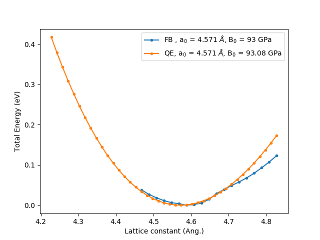
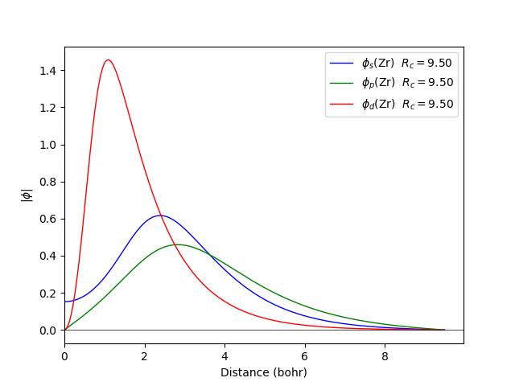

Quamtum espresso

Functional : LDA Ceperley/Alder Perdew/Zunger (1980)
Projection :
Calculation the bulk modulus obtained by fitting to the Murnaghan equation. The energy is plotted relative to the minimum energy for each case, -82.0 eV/atom in Fireball and -82.5178 eV/atom for Quantum espresso using the pseudopotentials Zr.pbe-mt_fhi.UPF . a0 and B0 are the equilibrium lattice constant and bulk modulus obtained by fitting to the Murnaghan equation of state.
Calculation the band dispersion in the fcc structure
| |
Quamtum espresso |
|---|
The cut off radio of the orbitals of Fireball are rs = 9.5 (bohr), rp = 9.5 (bohr), rd = 9.5 (bohr), and was generate like qs = 1.5, qp = 0.0, qd = 1.5, .
| Base | EX | Proj | crital | a | B |
| Zrs100750p000750d100750 | LDA | NPA | fcc | 4.567 | 96 |
| Zrs100950p000950d200950 | LDA | Lowdin | fcc | 4.574 | 93 |
| Zrs150950p000950d150950 | LDA | Mulliken | fcc | 4.571 | 93 |
| Zrs050850p000850d050850 | GGA | NPA | fcc | 4.582 | 104 |
| Zrs100950p000950d050950 | GGA | Lowdin | fcc | 4.561 | 98 |
| Zrs100950p000950d050950 | GGA | Mulliken | fcc | 4.589 | 96 |
The LDA calculation is done with the ncpp file to obtain 040.pp pseudopotential :
 |
 |
|---|
The GGA calculation is done with the ncpp file to obtain 040.pp pseudopotential :
 |
 |
|---|